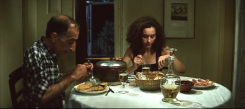

<!DOCTYPE html>
<html dir="ltr" lang="en-EN">
  <head>
    <meta http-equiv="content-type" content="text/html; charset=utf-8">
    <title>13. UNDERDOX School of Reis </title>
    <link href="../../grafik/css/normalize.css" rel="stylesheet" type="text/css"
      media="all">
    <link href="../../grafik/css/layout_17.css" rel="stylesheet" type="text/css"
      media="all">
  </head>
  <body>
    <div id="container">
      <div id="header"> <a href="../../../../UX11/grafik/UX11_banner.jpg"></a><a
          href="../../../../UX11/grafik/UX11_banner.jpg"></a>
      </div>
      <!--! end of #header -->
      <div id="navi">
        <div id="navi_border">
          <ul>
            <li><a href="http://www.underdox-festival.de/en/blog/">news</a></li>
            <li><a href="../programme.htm">Programme</a></li>
            <li><a href="../artistinfocus.htm">in focus</a></li>
            <li class="current"><a href="../films.htm">Films</a></li>
            <li><a href="../../de/videos.htm">Video art</a></li>
            <li><a href="../locations.htm">venues</a></li>
            <li><a href="../partner.htm">Partner</a></li>
            <li><a href="../press.htm">Press</a></li>
            <li><a href="../festival.htm">about</a></li>
            <li><a href="../archive.htm">Archive</a></li>
          </ul>
        </div>
        <!--! end of #navi-border --> </div>
      <!--! end of #navi -->
      <div id="main">
        <div id="main-content">
          <h1 class="betont">Cinema Português I<br>
            The school of reis</h1>
          <h1 class="betont"><strong> </strong></h1>
          <h1 class="betont"><br>
            <strong></strong></h1>
          <h1 class="betont"><strong>Friday 12 oct 6.30 pm Filmmuseum München<br>
            </strong></h1>
          <p></p>
          <p>The legacy of the legendary Portuguese filmmakers António Reis and
            Margarida Cordeiro is the focus of the 13th edition of UNDERDOX. Two
            programmes, developed in collaboration with Miguel Valverde
            (Indielisboa Festival), present the traditions of Portuguese cinema
            after the dictatorship and their influence on the younger
            generation.</p>
          <p><strong>Pedro Costa</strong> is the bridge figure between the
            generations. The director of <em>O sangue (The Blood) </em>(1989)
            and the <em>Fontaínhas</em> trilogy (1997-2005) created a highly
            cinematographic chiaroscuro in semi-fictional close-ups of the Cape
            Verdean immigrants and has been regarded as a pioneer of both poetic
            and political cinema ever since. <strong>Miguel Gomes</strong>'
            masterly crisis trilogy <em>As Mil e Uma Noites</em> <em>(1001
              Nights)</em> (2015) or <strong>João Pedro Rodrigues'</strong>
            phantasmagoric <em>Ornitólogo (The Ornithologist) </em>(2016)
            followed. <br>
            Costa, Gomes and Rodrigues are students of the influential but in
            this country hardly known Portuguese filmmaker <strong>António Reis</strong>,
            who with his wife, the psychiatrist <strong>Margarida Cordeiro</strong>,
            created the most important works immediately after the Salazar
            dictatorship. Reis taught at the Escola Superior de Teatro e Cinema
            from 1977 until his death in 1991. The "School of Reis" (Haden
            Guest, Harvard Film Archive) and the unmistakable style of an
            ethnographic cinema were named after him, which produced narratively
            liberated hypnotic-suggestive iconographies that seem both sensual
            and radical. <br>
            <strong>João César Monteiro</strong>, who died in 2003, created an
            unusually sarcastic and socially critical work for Portugal after
            ethnographic films that had been made under the direct influence of
            Reis. For their part, Reis and Cordeiro had studied with <strong>Manuel
              de Oliveira</strong> and the founders of Cinema Novo, <strong>Fernando
              Lopes</strong> and <strong>Paolo Rocha</strong>, so that the
            glorious beginnings of Lusitanian cinema also had an impact on
            film-making today.</p>
          <p>(Dunja Bialas)</p>
          <h1 class="betont"><strong><br>
              Sophia de Mello Breyner Andresen<br>
              <br>
            </strong></h1>
          
          <p></p>
          <p></p>
          <table width="423" border="0">
            <tbody>
              <tr>
                <td> <strong><br>
                    Jo√£o C√©sar Monteiro<br>
                    Portugal 1969</strong>&nbsp;&nbsp; <br>
                  35mm ‚Äì 17 min ‚Äì Portuguese<br>
                  B: Jo√£o C√©sar Monteiro ‚Äì P: Ricardo Malheiro ‚Äì Mit Sophia de
                  Mello Breyner Andresen<br>
                  <p> </p>
                </td>
              </tr>
            </tbody>
            <tbody>
              <tr>
                <td> <strong><br>
                  </strong>Part of a series of short-films dedicated to relevant
                  personalities of Portuguese arts and literature produced by
                  the company Cultura Filmes with support from the Gulbenkian
                  Foundation. Monteiro, at the time with no references besides
                  having frequented the London School of Film Technique
                  (1963‚Äì65), was recommended to Ricardo Malheiro, the owner of
                  Cultura Filmes and himself a director of documentary shorts,
                  by Alberto Seixas Santos and Ant√≥nio Pedro Vasconcelos. <br>
                  Dedicated to the memory of Carl Theodor Dreyer. <br>
                  <br>
                  "I suppose that it is the proof for those willing to
                  understand that poetry is not filmable and there is no point
                  in pursuing it. What is filmable is always something else that
                  may or may not have a poetic quality. My film is the
                  realization of this impossibility, and this uncompromising
                  shame makes it, I believe, poetic, malgr√©-lui. I also believe
                  that much more than a movie about Sophia, who for me only in a
                  random way is part of it, my film is a film about cinema and
                  its matter."<br>
                  (Jo√£o C√©sar Monteiro)<br>
                  <p> </p>
                </td>
              </tr>
            </tbody>
          </table>
          <h1 class="betont"><br>
            <strong></strong></h1>
          <h1 class="betont"><strong>Quem Espera por Sapatos de Defunto Morre
              Descal√ßo<br>
              Whoever Runs After a Dead Man's Shoes Dies Barefoot<br>
              <br>
            </strong></h1>
          <h1></h1>
          <p></p>
          <p></p>
          <table width="423" border="0">
            <tbody>
              <tr>
                <td> <strong><br>
                  </strong><strong>Jo√£o C√©sar Monteiro<br>
                    Portugal 1970<br>
                    German Premiere<br>
                  </strong>35mm ‚Äì 34 min<br>
                  B+P: Jo√£o C√©sar Monteiro ‚Äì Mit Lu√≠s Miguel Cintra<br>
                  <p> </p>
                </td>
              </tr>
            </tbody>
            <tbody>
              <tr>
                <td><br>
                  The tribulations of two friends who, in despair, start begging
                  from door-to-door, and are given a bundle including,
                  literally, a pair of deadman's shoes.<br>
                  The film is attributed to Cinema Novo.</td>
              </tr>
            </tbody>
          </table>
          <h1 class="betont"><br>
            <strong></strong></h1>
          <h1 class="betont"><strong>Jaime<br>
              <br>
            </strong></h1>
          <h1></h1>
          <p></p>
          <p></p>
          <table width="423" border="0">
            <tbody>
              <tr>
                <td> <strong><br>
                    Ant√≥nio Reis<br>
                    Portugal 1974<br>
                  </strong>35mm ‚Äì 35 min<br>
                  B: Ant√≥nio Reis ‚Äì P: Henrique Esp√≠rito Santo ‚Äì Mit Evangelina
                  Gil Delgado, Jaime Fernandes<br>
                  <p> </p>
                </td>
              </tr>
            </tbody>
            <tbody>
              <tr>
                <td> <strong><br>
                  </strong>A photographic portrait, views of the central
                  courtyard of an asylum, footage of water and nature, sketches
                  of one-eyed creatures, half-human, half animal, as well as
                  handwritten notes over which the camera calmly glides, all
                  accompanied off-screen by the sound of wind, sparse witness
                  testimonies and music deliberately used as a counterpoint
                  (Louis Armstrong, Telemann and Stockhausen). <br>
                  This is not biographical reconstruction but rather immersion
                  in the places connected with and unbounded fantasies of the
                  film‚Äôs deceased protagonist: agricultural worker Jaime
                  Fernandes (1900‚Äì1969), who spent 30 years of his life in a
                  psychiatric clinic in Lisbon. In his last few years, he
                  completed countless drawings which are now seen as outsider
                  art. <br>
                  Margarida Cordeiro noticed his work whilst working there as a
                  psychiatrist. She acted as assistant director on this first
                  collaboration with Ant√≥nio Reis. (Arsenal Institute) <br>
                  <p> </p>
                </td>
              </tr>
            </tbody>
          </table>
          <h1 class="betont"><br>
            <strong></strong></h1>
          <h1 class="betont"><strong>A M√£e<br>
              The Mother<br>
              <br>
            </strong></h1>
          <h1></h1>
          <p></p>
          <p></p>
          <table width="423" border="0">
            <tbody>
              <tr>
                <td> <strong><br>
                    Jo√£o C√©sar Monteiro<br>
                    Portugal 1979<br>
                    German Premiere<br>
                  </strong>35mm ‚Äì 27 min ‚Äì Portuguese<br>
                  K: Manuel Costa e Silva ‚Äì T: Jo√£o Canedo ‚Äì S: Maria Jos√© Pinto
                  ‚Äì Mit Elza Ferreira, Maria Clementina Teixera, C√©sar Lu√≠s
                  Lavrador <br>
                  <p> </p>
                </td>
              </tr>
            </tbody>
            <tbody>
              <tr>
                <td> <strong><br>
                  </strong>One of Monteiro‚Äôs first essays on the universe of
                  Portuguese oral culture, folktales and obscure colloquialisms.
                  The plot revolves around a traditional tale about theft,
                  greed, an ubiquitous mother, and the links between the worlds
                  of the living and the dead.<br>
                  Shot in Lebu√ß√£o in the municipality of Valpa√ßos during
                  Christmas week 1978.<br>
                  <p> </p>
                </td>
              </tr>
            </tbody>
          </table>
          <h1 class="betont"><br>
            <strong></strong></h1>
          <h1 class="betont"><strong>Passeio com o Johnny Guitar<br>
              Promenade with Johnny Guitar<br>
              <br>
            </strong></h1>
          
          <p></p>
          <p></p>
          <table width="423" border="0">
            <tbody>
              <tr>
                <td> <strong><br>
                  </strong><strong>Jo√£o C√©sar Monteiro<br>
                    Portugal 1995<br>
                    German Premiere<br>
                  </strong>35mm ‚Äì 4 min ‚Äì With Max Monteiro<strong></strong><br>
                  <p> </p>
                </td>
              </tr>
            </tbody>
            <tbody>
              <tr>
                <td> <strong><br>
                  </strong>Lord knows where Jo√£o de Deus has been. He's come
                  home wounded in the head. He's got a bit of the soundtrack to
                  Johnny Guitar in his head. Strangely enough, there is no sign
                  of the hole in his head. Day breaks over the city. Further
                  strolls are in sight. It is said that Mr. Monteiro, the alter
                  ego of John of God, occasionally goes out with Nicholas Ray.
                  At least, they've been seen together. (Cannes Film Festival,
                  1995)<br>
                  <p> </p>
                </td>
              </tr>
            </tbody>
          </table>
          <h1 class="betont"><br>
            <strong></strong></h1>
          <h1 class="betont"><strong>O Besti√°rio ou o Cortejo do Orfeu<br>
              Bestiary, Or the Parade of Orpheus<br>
              <br>
            </strong></h1>
          
          <p></p>
          <p></p>
          <table width="423" border="0">
            <tbody>
              <tr>
                <td> <strong><br>
                  </strong><strong>Jo√£o C√©sar Monteiro<br>
                    Portugal 1995<br>
                    German Premiere<br>
                  </strong>35mm ‚Äì 7 min ‚Äì With Raquel Ascens√£o, Jo√£o C√©sar
                  Monteiro<strong></strong><br>
                  <p> </p>
                </td>
              </tr>
            </tbody>
            <tbody>
              <tr>
                <td> <strong><br>
                  </strong>One of the adventures of Jo√£o de Deus, main character
                  of Monteiro's sarcastic late work. The title refers to the
                  poem collection "Le Bestiaire, ou Cort√®ge d'Orph√©e" by French
                  avant-garde poete Guillaume Apollinaire.
                  <p> </p>
                </td>
              </tr>
            </tbody>
          </table>
          <h1 class="betont"><br>
            <strong></strong></h1>
          <h1 class="betont"><strong>Lettera Amorosa<br>
              <br>
            </strong></h1>
          
          <p></p>
          <p></p>
          <table width="423" border="0">
            <tbody>
              <tr>
                <td> <strong><br>
                    Jo√£o C√©sar Monteiro<br>
                    Portugal 1995<br>
                    Deutsche Erstauff√ºhrung<br>
                  </strong>35mm ‚Äì 6 min ‚Äì Mit Jo√£o C√©sar Monteiro, Cl√°udia
                  Teixeira<br>
                  <p> </p>
                </td>
              </tr>
            </tbody>
            <tbody>
              <tr>
                <td> <strong><br>
                  </strong>A man receives a visit from a young woman who brings
                  him presents.<br>
                  <p> </p>
        ¿Ú≤ÉÓU¿Ú≤ÉÓU`Z≥ÉÓU@ä°ÉÓU(Û≤ÉÓU‡Ú≤ÉÓUæ‡Ú≤ÉÓUnd of #main-content --> </div>
      <!--! end of #main -->
      <div id="footer"> <a href="http://underdox-festival.de/">home</a> | <a href="../impressum.htm">imprint</a>
        | <a href="../../de/filme.htm">deutsch</a> | ¬© UNDERDOX 2006-2018</div>
      <!--! end of #footer --> </div>
    <!--! end of #container -->
  </body>
</html>
